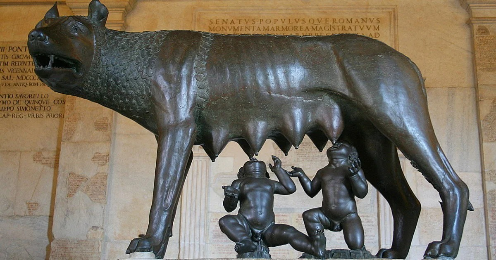
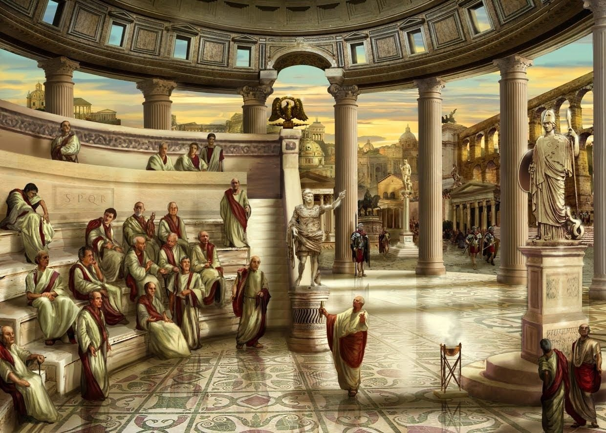
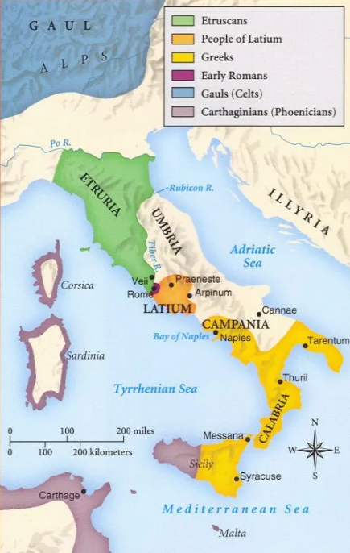
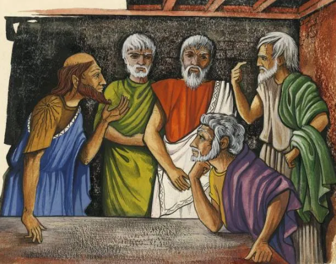
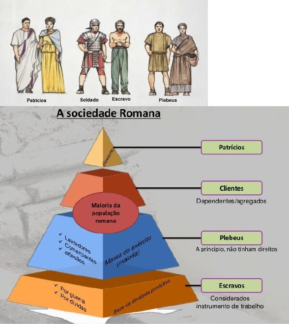
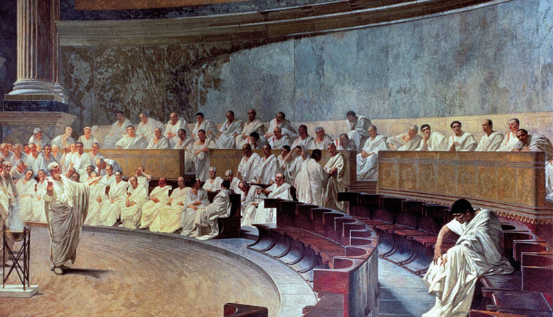

A Monarquia Romana
Antes de se tornar uma república e, mais tarde, um império, Roma foi governada por reis. Nesse primeiro período, a cidade desenvolveu instituições, costumes e formas de organização que influenciaram toda a sua história.
753 a.C. – 509 a.C.

Lupa Capitolina: loba com Rômulo e Remo.
Primeiro período político
A Monarquia Romana corresponde à fase inicial da organização política de Roma. Embora a tradição apresente uma sequência de sete reis, os pesquisadores destacam que os detalhes desse período são difíceis de confirmar, pois os relatos escritos foram registrados muito tempo depois dos acontecimentos.
Como Roma surgiu?
A história da origem de Roma mistura tradição, lenda e explicações baseadas em estudos históricos e arqueológicos.
Rômulo, Remo e os primeiros povoados
Segundo a lenda mais conhecida, os irmãos gêmeos Rômulo e Remo eram filhos do deus Marte e foram abandonados ainda bebês. Uma loba teria cuidado deles até serem encontrados por um pastor. Quando cresceram, os irmãos decidiram fundar uma cidade, mas entraram em conflito. Rômulo venceu a disputa e teria dado à cidade o nome de Roma.
A tradição indica 753 a.C. como a data da fundação. No entanto, os estudos históricos apontam um processo gradual: comunidades de agricultores e criadores de animais já viviam nas colinas próximas ao rio Tibre. Com o tempo, esses povoados cresceram, estabeleceram contatos e formaram um núcleo urbano.
Por isso, a fundação de Roma não deve ser entendida apenas como um acontecimento isolado. Ela também representa a união e o desenvolvimento de comunidades que ocupavam a região.

Fórum Romano

Península Itálica
O território e a importância do rio Tibre
Roma surgiu na região central da Península Itálica, às margens do rio Tibre. A localização favorecia o contato entre o interior e o litoral, facilitava o deslocamento de pessoas e mercadorias e oferecia acesso a água e terras utilizadas na agricultura.
As colinas da região também ajudavam na defesa dos primeiros assentamentos. A proximidade de rotas terrestres e fluviais contribuiu para que a cidade se tornasse um ponto importante de circulação e comércio.
Durante a Monarquia, Roma ainda era uma cidade em crescimento, cercada por outros povos e comunidades da Península Itálica. Suas relações com vizinhos envolveram trocas culturais, alianças e conflitos.
Como Roma era organizada?
O rei ocupava a posição central do governo, mas a vida política também envolvia conselhos e assembleias. A sociedade era marcada por diferenças de riqueza, origem familiar e participação política.
O rei, o Senado e as assembleias
O principal governante era o rei, chamado em latim de rex. Ele exercia funções militares, políticas, judiciais e religiosas. Liderava os guerreiros, conduzia decisões importantes, resolvia conflitos e participava de cerimônias religiosas.
Isso não significa que o rei pudesse agir sem considerar os costumes e os grupos influentes da cidade. O Senado era um conselho formado principalmente por homens de famílias importantes. Sua função era aconselhar o governante e representar os interesses da aristocracia.
Também existiam assembleias organizadas em grupos chamados cúrias. A participação política era restrita e não correspondia à democracia como entendemos hoje. Mulheres, pessoas escravizadas e muitos habitantes não tinham os mesmos direitos políticos dos cidadãos homens.

Senado Romano

Pirâmide social da Roma antiga
Grupos sociais: Patrícios, plebeus e pessoas escravizadas
Os patrícios eram ligados às famílias tradicionais que possuíam prestígio, riqueza e grande influência política. Em geral, tinham mais facilidade para ocupar posições importantes e participar das decisões da comunidade.
Os plebeus formavam um grupo variado. Entre eles havia agricultores, artesãos, comerciantes e trabalhadores. Suas condições de vida não eram todas iguais, mas, de modo geral, tinham menos influência política que os patrícios durante os primeiros tempos de Roma.
Também havia pessoas escravizadas, que não possuíam liberdade e podiam ser obrigadas a realizar diferentes tipos de trabalho. A escravidão esteve presente na sociedade romana desde a Antiguidade e se transformou ao longo dos séculos.
Essas categorias ajudam a compreender a sociedade, mas não resumem todas as diferenças existentes: riqueza, relações familiares, ocupação e origem também influenciavam a posição de cada pessoa.
Economia e vida cotidiana
Nos primeiros séculos, Roma tinha uma economia ligada ao campo, mas sua localização também favorecia o comércio e o contato com outros povos.
Agricultura, criação de animais e comércio
A agricultura era uma das principais atividades econômicas. Famílias cultivavam cereais, uvas, oliveiras e outros produtos adequados à região. A criação de animais, especialmente ovinos, caprinos e bovinos, também tinha importância para a alimentação, o vestuário e o trabalho.
O comércio acontecia em mercados e por meio de rotas terrestres e fluviais. Produtos circulavam entre Roma e comunidades vizinhas, permitindo a troca de alimentos, ferramentas, cerâmicas e outros objetos. O crescimento da cidade aumentou a necessidade de organizar espaços públicos, caminhos e áreas de encontro.
O cotidiano variava conforme a posição social e a ocupação. Enquanto famílias ricas tinham maior acesso a propriedades e influência, trabalhadores do campo e da cidade dependiam de suas atividades diárias para garantir o sustento.
O campo era essencial
A produção agrícola e a criação de animais sustentavam boa parte da população e ajudavam a abastecer a cidade.
Religião e costumes
A religião estava presente em vários aspectos da vida romana. Os habitantes cultuavam diferentes divindades e realizavam rituais para pedir proteção, agradecer colheitas e buscar bons resultados em guerras e decisões públicas.
As cerimônias religiosas não eram vistas apenas como assuntos particulares. Elas também faziam parte da vida coletiva e podiam estar ligadas à autoridade do governante. Sacerdotes e outros responsáveis pelos rituais tinham funções importantes na comunidade.
A tradição associa o rei Numa Pompílio à organização de práticas religiosas e de cargos sacerdotais. Como acontece com outros relatos sobre os primeiros reis, esses detalhes devem ser vistos com cuidado, pois misturam memória histórica e tradição lendária.
Rituais públicos
Festivais, oferendas e cerimônias faziam parte do calendário e das atividades da comunidade.
Exército e defesa da cidade
O rei também tinha responsabilidades militares. Em períodos de conflito, cabia a ele liderar as forças de Roma e organizar a defesa do território. A participação na guerra estava ligada à condição social e à capacidade de contribuir com recursos e serviço militar.
Os conflitos com povos próximos podiam resultar em disputas por terras, rotas e influência. Ao mesmo tempo, alianças e contatos ajudavam Roma a ampliar suas relações com outras comunidades da região.
Durante a Monarquia, a estrutura militar ainda era muito diferente do grande exército profissional que Roma teria em períodos posteriores. Por isso, é importante não imaginar a cidade dos primeiros reis como se já fosse o enorme poder militar da época imperial.
Liderança militar
Além de administrar a cidade e participar dos rituais, o rei era responsável pelo comando militar.
Os reis de Roma
A tradição romana apresenta sete reis entre a fundação lendária da cidade e o início da República. Os relatos sobre seus governos reúnem elementos históricos e lendários.
I
Rômulo
Considerado o fundador lendário de Roma e seu primeiro rei. A tradição também o associa à criação das primeiras instituições e à organização inicial da cidade.
II
Numa Pompílio
Associado à organização da religião romana, dos rituais, do calendário religioso e de diferentes funções sacerdotais.
III
Túlio Hostílio
Lembrado pelas guerras e pela expansão do poder romano sobre comunidades vizinhas, entre elas Alba Longa.
IV
Anco Márcio
Tradicionalmente ligado à expansão de Roma e à fundação de Óstia, próxima à foz do rio Tibre.
V
Tarquínio Prisco
Associado a obras públicas, ao crescimento urbano e ao fortalecimento da influência etrusca em Roma.
VI
Sérvio Túlio
Relacionado a reformas na organização da população e do exército, que teriam considerado a riqueza dos cidadãos.
VII
Tarquínio, o Soberbo
Apontado como o último rei. A tradição o descreve como autoritário, e sua queda é ligada ao fim da Monarquia.
O fim da Monarquia e o início da República
De acordo com a tradição, Tarquínio, o Soberbo, foi afastado do poder em 509 a.C.. A narrativa conta que o comportamento autoritário do rei e os conflitos com famílias influentes contribuíram para sua queda. Os detalhes desse processo são discutidos pelos historiadores.
Depois da expulsão do último rei, os romanos organizaram uma nova forma de governo: a República. Em vez de concentrar o poder em um único governante vitalício, a República passou a contar com magistrados eleitos por períodos limitados e com instituições como o Senado e as assembleias.
A mudança não significou que todos os habitantes passaram a ter direitos iguais. A participação política continuou restrita e as disputas entre patrícios e plebeus marcaram os séculos seguintes. Mesmo assim, o fim da Monarquia iniciou uma nova etapa da história romana.
